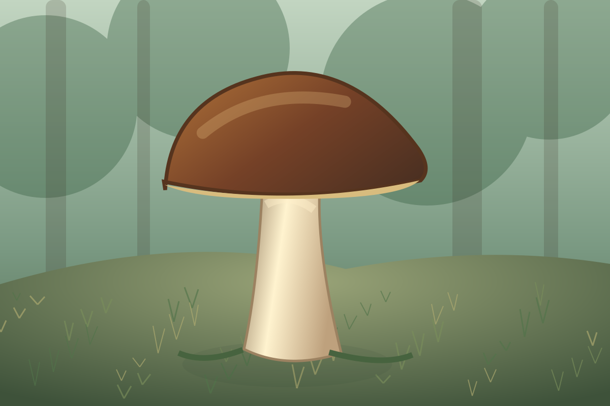
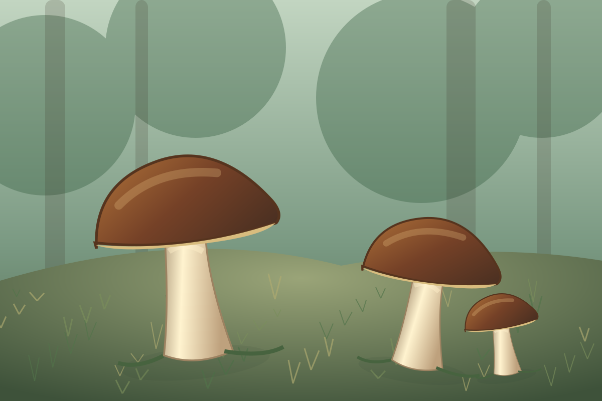

Білий гриб є одним із найвідоміших їстівних грибів. Він росте у хвойних та листяних лісах. Має коричневу шапинку, товсту ніжку та щільну м'якоть. Цей гриб цінується за приємний смак і аромат.
Білий гриб часто зустрічається під соснами, ялинами, дубами та березами. Найкращі умови для його росту виникають після теплих дощів. Збирати гриби потрібно уважно, оскільки деякі неїстівні види можуть бути схожими.

Білі гриби використовують у кулінарії для приготування супів, соусів та інших страв. Їх можна сушити, заморожувати та варити. Головною перевагою цього гриба є його чудовий смак